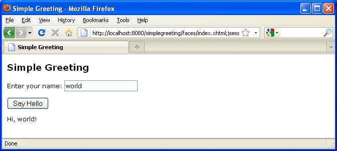

The simplegreeting CDI Example
The simplegreeting example illustrates some of the most basic features of CDI: scopes, qualifiers, bean injection, and accessing a managed bean in a JavaServer Faces application.
When you run the example, you click a button that presents either a formal or an informal greeting, depending on how you edited one of the classes.
The example includes four source files, a Facelets page and template, and configuration files.
The simplegreeting Source Files
The four source files for the simplegreeting example include the following:
The default Greeting class, shown in Beans as Injectable Objects
The @Informal qualifier interface definition and the InformalGreeting class that implements the interface, both shown in Using Qualifiers
The Printer managed bean class that injects one of the two interfaces, shown in full in Adding Setter and Getter Methods
The source files are located in the following directory:
tut-install/examples/cdi/simplegreeting/src/java/greetings
The Facelets Template and Page
To use the managed bean in a simple Facelets application, you can use a very simple template file and index.xhtml page.
The template page, template.xhtml, looks like this:
<?xml version='1.0' encoding='UTF-8' ?>
<!DOCTYPE html PUBLIC "-//W3C//DTD XHTML 1.0 Transitional//EN"
"http://www.w3.org/TR/xhtml1/DTD/xhtml1-transitional.dtd">
<html xmlns="http://www.w3.org/1999/xhtml"
xmlns:h="http://java.sun.com/jsf/html"
xmlns:ui="http://java.sun.com/jsf/facelets">
<h:head>
<meta http-equiv="Content-Type" content="text/html; charset=UTF-8"/>
<link href="resources/css/default.css" rel="stylesheet" type="text/css"/>
<title><ui:insert name="title">Default Title</ui:insert></title>
</h:head>
<body>
<div id="container">
<div id="header">
<h2><ui:insert name="head">Head</ui:insert></h2>
</div>
<div id="space">
<p></p>
</div>
<div id="content">
<ui:insert name="content"/>
</div>
</div>
</body>
</html>To create the Facelets page, you can redefine the title and head, then add a small form to the content:
<?xml version='1.0' encoding='UTF-8' ?>
<!DOCTYPE html PUBLIC "-//W3C//DTD XHTML 1.0 Transitional//EN"
"http://www.w3.org/TR/xhtml1/DTD/xhtml1-transitional.dtd">
<html xmlns="http://www.w3.org/1999/xhtml"
xmlns:ui="http://java.sun.com/jsf/facelets"
xmlns:h="http://java.sun.com/jsf/html"
xmlns:f="http://java.sun.com/jsf/core">
<ui:composition template="/template.xhtml">
<ui:define name="title">Simple Greeting</ui:define>
<ui:define name="head">Simple Greeting</ui:define>
<ui:define name="content">
<h:form id="greetme">
<p><h:outputLabel value="Enter your name: " for="name"/>
<h:inputText id="name" value="#{printer.name}"/></p>
<p><h:commandButton value="Say Hello" action="#{printer.createSalutation}"/></p>
<p><h:outputText value="#{printer.salutation}"/> </p>
</h:form>
</ui:define>
</ui:composition>
</html>The form asks the user to type a name. The button is labeled “Say Hello,” and the action defined for it is to call the createSalutation method of the Printer managed bean. This method in turn calls the greet method of the defined Greeting class.
The output text for the form is the value of the greeting returned by the setter method. Depending on whether the default or the @Informal version of the greeting is injected, this is either
Hello, name.
or
Hi, name!
where name is the name typed by the user.
The Facelets page and template are located in the following directory:
tut-install/examples/cdi/simplegreeting/web
The simple CSS file that is used by the Facelets page is in the following location:
tut-install/examples/cdi/simplegreeting/web/resources/css/default.css
Configuration Files
You must create an empty beans.xml file to indicate to GlassFish Server that your application is a CDI application. This file can have content in some situations, but not in simple applications like this one.
Your application also needs the basic web application deployment descriptors web.xml and sun-web.xml.
These configuration files are located in the following directory:
tut-install/examples/cdi/simplegreeting/web/WEB-INF
Building, Packaging, Deploying, and Running the simplegreeting CDI Example
You can build, package, deploy, and run the simplegreeting application using either NetBeans IDE or the Ant tool.
To Build, Package, and Deploy the simplegreeting Example Using NetBeans IDE
To build, package, and deploy the simplegreeting example to the GlassFish Server using NetBeans IDE, follow these steps.
This procedure builds the application into the tut-install/examples/cdi/simplegreeting/build/web directory and deploys the contents of this directory to the GlassFish Server.
- In NetBeans IDE, select File→Open Project.
- In the Open Project dialog, navigate to tut-install/examples/cdi/.
- Select the simplegreeting folder.
- Select the Open as Main Project check box.
- Click Open Project.
- (Optional) To modify the Printer.java file, perform these steps:
- Expand the Source Packages node.
- Expand the greetings node.
- Double-click the Printer.java file.
- In the edit pane, comment out the @Informal annotation:
//@Informal @Inject Greeting greeting; - Save the file.
- In the Projects tab, right-click the simplegreeting project and select Deploy.
To Build, Package, and Deploy the simplegreeting Example Using Ant
To build, package, and deploy the simplegreeting example to the GlassFish Server using Ant, follow these steps.
This procedure builds the application into the tut-install/examples/cdi/simplegreeting/build/web directory and deploys the contents of this directory to the GlassFish Server.
This procedure builds and packages the application into simplegreeting.war, located in tut-install/examples/cdi/simplegreeting/dist/, and deploys this WAR file to the GlassFish Server.
- In a terminal window, go to this directory:
tut-install/examples/cdi/simplegreeting/
- Type the following command:
ant
This command calls the default target, which builds and packages the application into a WAR file, simplegreeting.war, located in the dist directory.
- Type the following command:
ant deploy
simplegreeting.war will be deployed to the GlassFish Server.
To Run the simplegreeting Example
- In a web browser, type the following URL:
http://localhost:8080/simplegreeting
The Simple Greeting page opens.
- Type a name in the text field.
For example, suppose you type Duke.
- Click the Say Hello button.
If you did not modify the Printer.java file, the following text string appears below the button:
Hi, Duke!
If you commented out the @Informal annotation in the Printer.java file, the following text string appears below the button:
Hello, Duke.
Figure 19-1 shows what the application looks like if you did not modify the Printer.java file.
Figure 19-1 Simple Greeting Application
